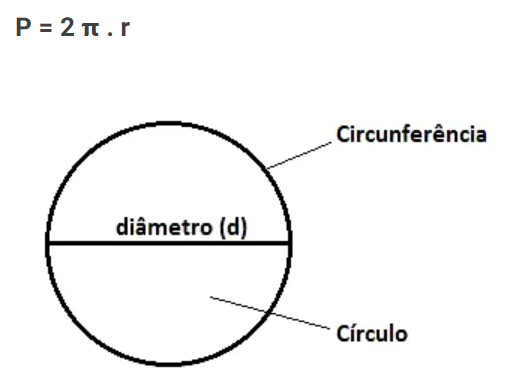

O perímetro é um conceito da matemática que mede o comprimento (contorno) de determinada figura. Em outras palavras, o perímetro é a soma de todos os lados de uma figura geométrica. No caso do círculo, o perímetro é chamado de circunferência e é calculado pelo dobro da medida do raio (2r). Assim, o perímetro da circunferência é medido pela fórmula:

O diametro seria o "meio" do circulo, e o Raio a metade dele. Como na figura.
 cicunferencia
area
diametro
raio
cicunferencia
area
diametro
raio